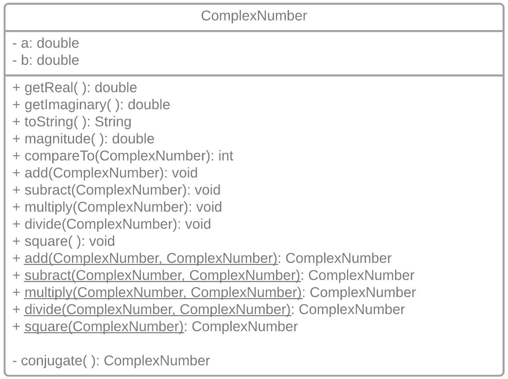

Milestone 1: Implement a ComplexNumber class.
Create a ComplexNumber data type to allow programmers to easily use complex numbers of the form \(a+bi\).
You’ll use this data type to create a Mandelbrot/Julia Set graphical explorer.
The ComplexNumber Class Diagram
This UML class diagram represents the data attributes and methods that work together to form the ComplexNumber data type.

ComplexNumber Requirements
Your ComplexNumber data type should include these methods:
- Three constructors: standard, copy, and default (0+0i)
- Two accessor methods:
getReal()andgetImaginary() -
String toString():a b Display Notes 2.0 3.0 2.0+3.0i No spaces 2.0 0 2.0 b == 0 0 3.0 3.0i a == 0 0.0 0.0 0.0 a == 0 && b == 0 2.0 -3.0 2.0-3.0i No +- -
public double magnitude()returns a complex number’s distance from the origin -
int compareTo(ComplexNumber c)uses standard conventions to compare two ComplexNumbers based on theirmagnitude -
private ComplexNumber conjugate()used individeto return the conjugate of a ComplexNumber - five destructive arithmetic instance methods:
-
public void add(ComplexNumber c) -
public void subtract(ComplexNumber c) -
public void multiply(ComplexNumber c) -
public void divide(ComplexNumber c) -
public void square(ComplexNumber c)
-
- five non-destructive arithmetic static methods:
-
public static ComplexNumber add(ComplexNumber c1, ComplexNumber c2) -
public static ComplexNumber subtract(ComplexNumber c1, ComplexNumber c2) -
public static ComplexNumber multiply(ComplexNumber c1, ComplexNumber c2) -
public static ComplexNumber divide(ComplexNumber c1, ComplexNumber c2) -
public static ComplexNumber square(ComplexNumber c)
-
Submission Details
Submit a file called ComplexNumber.java and a compressed folder called docs containing a javadoc-generated webpage documentation site.
Tips
Use the ComplexNumber.java starter code.
ComplexNumber.java is included in the starter code.
Use the exact method signatures specified above.
This is necessary for the automated code testing used for this project. There are 25 automated tests.
Carefully consider additional testing scenarios.
Your ComplexNumber class will be compiled and run using an augmented version of ComplexNumberTester.java with more test cases than those included above.
Don't forget introductory comments.
Include your name, submission date, and class section in your introductory comments.